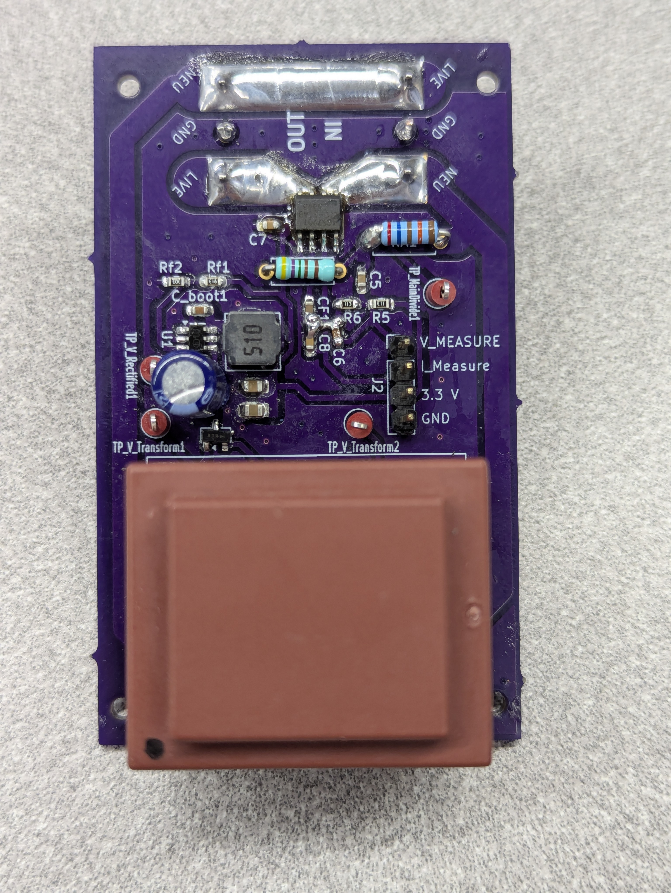
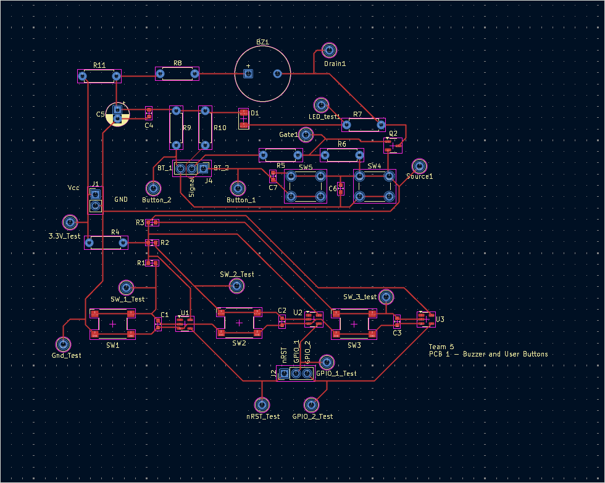
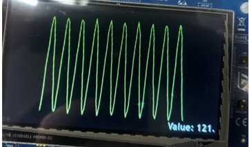

Updated 8/13/2026 by Zachary Glavin
Documentation of this project is still in the works. Please check back soon for more updates.
Due to the design of the power supply, and the power/sensors PCB design being my (Zachary Glavin's) responsibility, this webpage will focus mostly on those aspects of the project, with additional information provided as time allows.
The University of Wisconsin - Milwaukee's Capstone - Senior Design class is the final requirement for graduation in the Bachelor of Science in Engineering program. Teams of five students each work to design and prototype a product.
Our team chose to build a power meter. We chose to design this product because of it's utility in todays market. Rising utility prices are on the top of everyone's mind, and energy concious consumers demand tools to monitor the perfomance of thier appliances. This product enables consumers to make decisions about what products they decide to keep plugged into their walls.
The complexity of the product also played a major role in choosing the power meter project. The power meter is complex enough to give all 5 members of our team a productive role, while being limited enough in scope so as to make finishing the prototype within our time constraints possible.
Zachary Glavin - B.S. Electrical Engineering, May 2026 | Power Supply, Project Manager
Erdon Kamberi - B.S. Computer Engineering, May 2026 | MCU, UX Design
Cole Klinger - B.S. Electrical Engineering, May 2026 | Display, User IO
Yu Sheng Yeh - B.S. Electrical Engineering, May 2026 | Alarm, UX Design
Simranjeet Singh - B.S. Electrical Engineering, May 2026 | Sensor Block
The power meter is a device that perfoms electrical measurements on household appliances. The power meter is plugged into a household electrical outlet, and the appliance is then plugged into the power meter. The appliance current passes through the power meter, and the wall voltage is measured. An onboard microcontroller stores this data, and calculates power, energy, and power factor, and displays this information on a monitor for the consumer. Buttons allow the user to navigate menus, set threshholds for the alarm, and export data. The alarm consists of an LED and buzzer, providing audible and visual feedback to the user. This device is similar to the Kill-A-Watt made by the company P3 International, but features a color display and data export. Our product further differentiates itself by providing more information (Power factor etc.) which will be useful to advanced users.
The power supply consists of a center-tapped transformer, and 2 diodes to rectify the incoming voltage. A 1 MHz ST buck converter IC steps down the input voltage into a 3.3V supply which is distributed to the rest of the blocks.
The sensor block is designed to output signals for voltage and current. The hall-effect IC requires the full current to pass through itself, and so the PCB design must withstand 15A max and 12A continuous current. The voltage sensor uses a high-ohm voltage divider, and a coupling capacitor to isolate the mains from the MCU.



| Minimum | Nominal | Maximum | |
|---|---|---|---|
| Operating Tempurature | 0℃ | 21℃ | 40℃ |
| AC Input Voltage | 112 V | 120 V | 128 V |
| Current Draw (From Attached Appliance) | 0 A | - | 15 A |
| Power Consumption (Meter) | - | 0.33 W | 0.66 W |
| Current error | - | - | ±2.5 mA |
| Voltage Accuracy error | - | - | ±2.5 mV |
| Power Accuracy error | - | - | 1% |
| Manufacturing Cost per unit | - | - | $10 |
| Material Cost per unit | - | - | $15 |
| Description | Requirement | Notes |
|---|---|---|
| Intended Market Geography | North America | |
| Intended Market Demography | 16+ | Technical users |
| AVG List Sales Price | $50 | |
| Estimated Annual Volume | 6000 units | |
| Max Material Cost | $15 | |
| Max Assembly and Test Cost | $10 | |
| Reliablility Life Target | 20 years | |
| Target Warranty Length | 5 years | |
| Min Life Cycle Period | 10 years |
| Name | Mfg Part Number | Schematic Reference | Size / Package | Qty | Description |
|---|---|---|---|---|---|
| Buck Converter | ST 3601CMR | U1 | SMT 23-6 | 1 | ST step-down DC-DC converter |
| Power Transformer | BV301D06020 | J1 | Non-standard | 1 | Single primary, dual secondary |
| Diode Pair | 1 | ||||
| Input Capacitor | 1 | ||||
| Output Capacitor | 1 | ||||
| Inductor | 1 |
A constraint which was set by the instructor was that no AC to DC converters were to be used. This was due to a history of issues former teams had experienced when implimenting AC/DC converters into their projects. This increased the size of the transformer needed, and will be reconsidered in future itterations to save space and cost.
The power supply consists of a step-down, center-tapped transformer and a diode pair. This and Cin rectify the 120 VAC into 15 VDC.
After meeting the nessesary requirements of output voltage and current, a number of other factors determined our choice of the ST-DCP3601 buck converter. The cost at scale from Digikey.com of $0.38 per unit, combined with the thorough documentation from ST, made this our top choice. The 1 A output and wide range of input/output voltages provided the oportunity for reusing this piece for possible higher power designs.